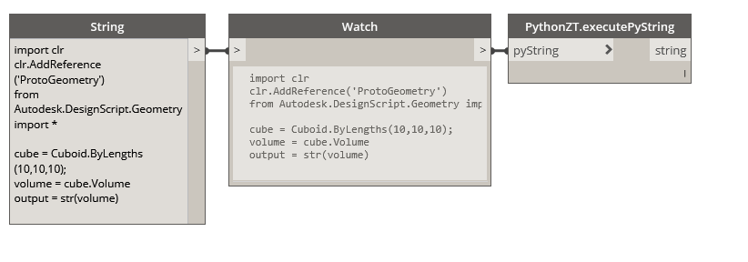
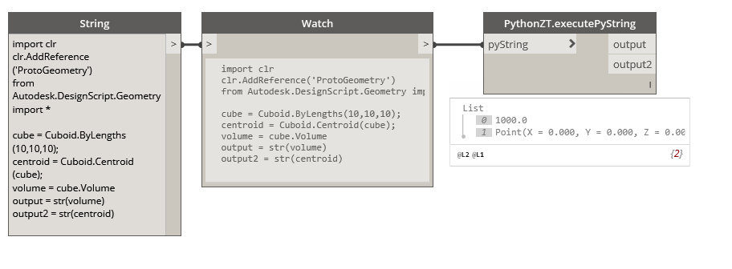

Executing Python Scripts in Zero-Touch Nodes (C#)
If you are comfortable writing scripts in Python and want more functionality out of the standard Dynamo Python nodes, we can use Zero-Touch to create our own. Let's start with a simple example that allows us to pass a python script as a string to a Zero-Touch node where the script is executed and a result is returned. This case study will build on the walk-throughs and examples in the Getting Started section, please refer to those if you are completely new to creating Zero-Touch nodes.

A Zero-Touch node that will execute a Python script string
Python Engine
This node relies on an instance of the IronPython scripting engine. To do this, we need to reference a few additional assemblies. Follow the steps below to setup a basic template in Visual Studio:
- Create a new Visual Studio class project
- Add a reference to the
IronPython.dlllocated inC:\Program Files (x86)\IronPython 2.7\IronPython.dll - Add a reference to the
Microsoft.Scripting.dlllocated inC:\Program Files (x86)\IronPython 2.7\Platforms\Net40\Microsoft.Scripting.dll - Include the
IronPython.HostingandMicrosoft.Scripting.Hostingusingstatements in your class - Add an private empty constructor to prevent an additional node from being added to the Dynamo library with our package
- Create a new method that takes a single string as an input parameter
- Within this method we will instantiate a new Python engine, and create an empty script scope. You can imagine this scope as the global variables within an instance of the Python interpreter
- Next, call
Executeon the engine passing the input string and the scope as parameters - Finally, retrieve and return the results of the script by calling
GetVariableon the scope and passing the name of the variable from your Python script that contains the value you are trying to return. (See the example below for further details)
The following code provides an example for the step mentioned above. Building the solution will create a new .dll located in the bin folder of our project. This .dll can now be imported into Dynamo as part of a package or by navigating toFile < Import Library...
using IronPython.Hosting;
using Microsoft.Scripting.Hosting;
namespace PythonLibrary
{
public class PythonZT
{
// Unless a constructor is provided, Dynamo will automatically create one and add it to the library
// To avoid this, create a private constructor
private PythonZT() { }
// The method that executes the Python string
public static string executePyString(string pyString)
{
ScriptEngine engine = Python.CreateEngine();
ScriptScope scope = engine.CreateScope();
engine.Execute(pyString, scope);
// Return the value of the 'output' variable from the Python script below
var output = scope.GetVariable("output");
return (output);
}
}
}
The Python script is returning the variable output, which means we will need an output variable in the Python script. Use this sample script to test the node in Dynamo. If you have ever used the Python node in Dynamo the following should look familiar. For more information check out the Python section of the primer.
import clr
clr.AddReference('ProtoGeometry')
from Autodesk.DesignScript.Geometry import *
cube = Cuboid.ByLengths(10,10,10);
volume = cube.Volume
output = str(volume)
Multiple Outputs
One limitation of the standard Python nodes is that they only have a single output port so if we wish to return multiple object we must construct a list and retrieve each object in. If we modify the example above to return a dictionary, we can add as many output ports as we want. Refer to the Returning Multiple Values section in Going Further With Zero-Touch for more specifics on dictionaries.

This node is allowing us to return both the cuboid's volume and its centroid.
Let's modify the previous example with these steps:
- Add a reference to
DynamoServices.dllfrom the NuGet package manager - In addition to the previous assemblies include
System.Collections.GenericandAutodesk.DesignScript.Runtime - Modify the return type on our method to return a dictionary which will contain our outputs
- Each output must be individually retrieved from the scope (consider setting up a simple loop for larger sets of outputs)
using IronPython.Hosting;
using Microsoft.Scripting.Hosting;
using System.Collections.Generic;
using Autodesk.DesignScript.Runtime;
namespace PythonLibrary
{
public class PythonZT
{
private PythonZT() { }
[MultiReturn(new[] { "output1", "output2" })]
public static Dictionary<string, object> executePyString(string pyString)
{
ScriptEngine engine = Python.CreateEngine();
ScriptScope scope = engine.CreateScope();
engine.Execute(pyString, scope);
// Return the value of 'output1' from script
var output1 = scope.GetVariable("output1");
// Return the value of 'output2' from script
var output2 = scope.GetVariable("output2");
// Define the names of outputs and the objects to return
return new Dictionary<string, object> {
{ "output1", (output1) },
{ "output2", (output2) }
};
}
}
}
We have also added an additional output variable (output2) to the sample python script. Keep in mind that these variables can use any legal Python naming conventions, output has been used strictly for the sake of clarity in this example.
import clr
clr.AddReference('ProtoGeometry')
from Autodesk.DesignScript.Geometry import *
cube = Cuboid.ByLengths(10,10,10);
centroid = Cuboid.Centroid(cube);
volume = cube.Volume
output1 = str(volume)
output2 = str(centroid)